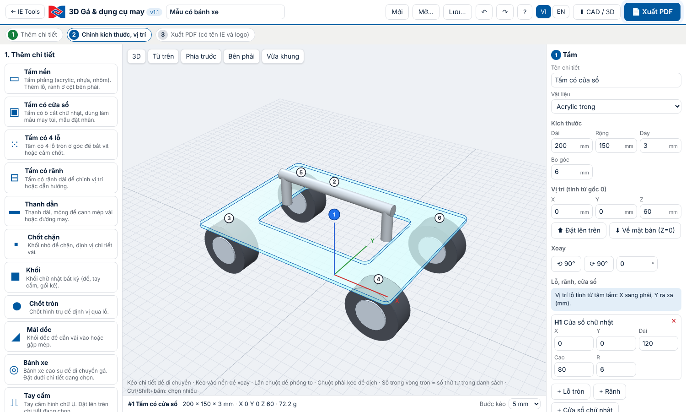
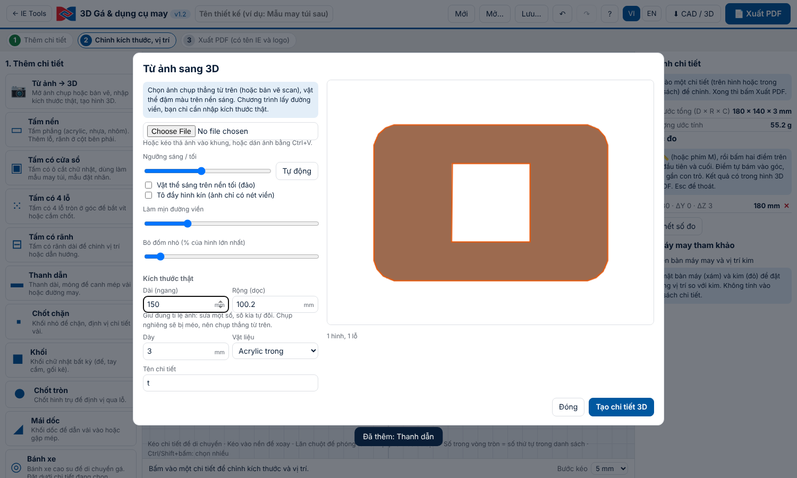
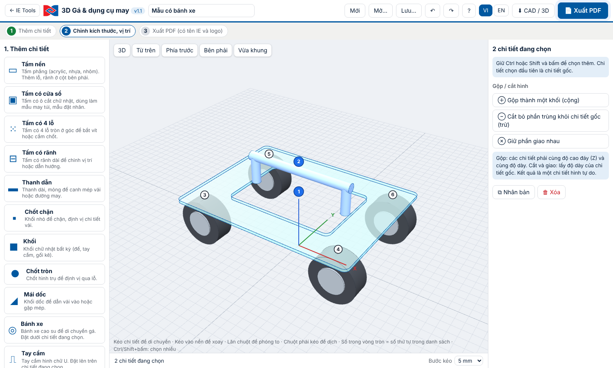
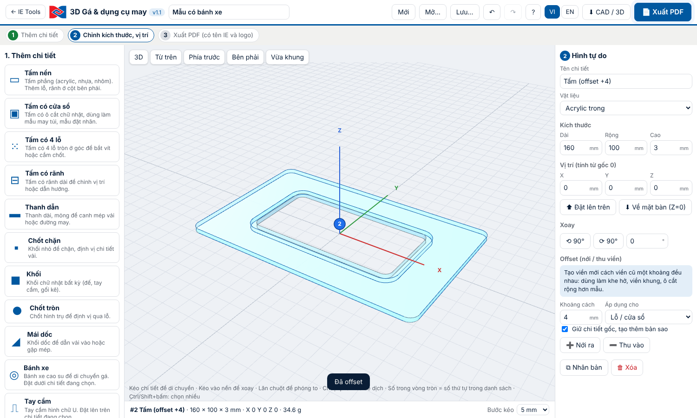

3D fixtures & sewing tools
Design jigs, templates, seam guides and sewing aids in 3D, then export a PDF with the Crystal Martin Vietnam logo and the IE name. No 3D knowledge needed. Runs in Chrome or Edge and sends no data anywhere. This is not Layout Sim (line layout).
1. Introduction

2. Three steps

| Step | What to do |
|---|---|
| 1. Add parts | Press a button in the left column. A new part goes next to the existing ones; when a part is selected, a new pin, bar or block is put on top of it. |
| 2. Adjust | Click a part (in the picture or in the list). Type Length, Width, Height and position X, Y, Z in the right column, or drag the part with the mouse. Drag the empty background to rotate, wheel to zoom, right-drag to pan. |
| 3. Export PDF | Press 📄 Export PDF, type the IE name, check the preview, press ⬇ Download PDF. |
3. Kinds of parts
| Button | Used for |
|---|---|
| Base plate, Plate with window, Plate with 4 holes, Plate with slot | Fixture base, cutting template, label template, pocket template. A plate can get round holes, slots, rectangular windows and rounded corners. |
| Guide rail, Stop block, Block | Following a fabric edge, stops, bases, handles, spacers. |
| Round pin | Locating pin through a hole. |
| Ramp | Leading fabric in, folding an edge. |
| Wheel | Rubber wheel to move the fixture. With a part selected, the wheel goes under it (negative Z); duplicate it and type X, Y to place all four. |
| Handle | U-shaped handle, placed on top of the selected part. Adjust Length, Bar diameter, Height. |
| Magnet, Screw | Flat round magnet to hold a guide on the table; small screw to fasten parts (both are round pins with ready sizes). |
Materials: clear acrylic, ABS/PVC, aluminium, steel, plywood, rubber/foam. The weight is estimated from the material density (holes subtracted).
4. Adjusting a part
- Length / Width / Height (Thickness): Length is horizontal (X), Width goes away from you (Y), Height goes up (Z).
- X, Y, Z: position from the origin 0. Z is the height of the bottom face (0 = on the table). ⬆ Put on top calculates Z so the part rests on the parts below it.
- Rotate: ⟲ 90°, ⟳ 90° or type an angle.
- Holes, slots, windows (plates only): positions are from the plate centre. The PDF drawing switches to coordinates from the bottom left corner for manufacturing.
- Reference sewing machine bed (right column when no part is selected): shows the machine bed and the needle position so the fixture can be placed against the needle; the needle is also on the PDF drawings.
- Drag step (under the 3D picture): 1, 5 or 10 mm when dragging; hold Alt to drag freely.



4b. Sample tables (reference)
The Sample tables section in the left column has a sewing table (1200 × 600 × 750), work table (1500 × 750 × 750), cutting table (2400 × 1500 × 850) and small table (600 × 600 × 700). The table is placed under the design (table top at Z = 0) to compare with the real table. Length, Width, Height and top thickness can be changed.
A table is a reference only part: it is shown in the 3D view (and the PDF 3D picture) but not counted in the parts list, weight, PDF drawings and CAD files. Tick Reference only in the right column to give any other part the same status.
4a. Add shapes on a face (Onshape style)
Press ▦ Pick face (or key F). Move the pointer over a part: the face under the pointer lights up. Click to select the face (it turns orange; the orange + is the placement point). Then press a shape button in the left column: the new shape is put right on that face, at the point you clicked.
- Top face: the shape stands on it. Bottom face: the shape hangs under it. Side face: the shape touches it (a rail lies along the face, a wheel gets its axle across the face).
- Click on the face again to change the placement point; Put at face centre picks the centre; Clear face or Esc leaves. The selected face is kept so several shapes can be added in a row.
- The face is cleared automatically when its part is resized or moved.

4c. Ruler
Press 📏 Ruler (or key M), then click two points on the picture. Points snap to nearby part corners and hole centres (a dashed line follows the mouse). While you move the mouse, the edge or vertex near the pointer is highlighted in orange (with its name and the edge length); edge middles snap too, and hidden edges are ignored. The result shows the length and ΔX, ΔY, ΔZ, is listed in the right column (with a delete button) and is printed in the PDF 3D picture. Esc leaves the ruler. The X and Y axes also carry mm scale marks whose step follows the zoom level.

4e. Lock position
Select one or more parts and press 🔒 Lock (or key L, or Lock position in the right column). A locked part cannot be dragged, nudged with the arrow keys, or have its X, Y, Z and rotation changed; size, material and holes can still be edited. Locked parts show 🔒 on the picture and in the list; dragging on a locked part rotates the view like dragging the background. Press again to unlock. With nothing selected the right column has Lock all / Unlock all. The lock is saved with the project.
4d. Picture to 3D
Press 📷 Picture → 3D at the top of the left column.
- Choose an image (or drop it, or paste with Ctrl+V). Best is a photo taken straight from above, dark object on a light background; a tilted photo is distorted.
- The tool traces the outline (and inner holes) and draws it over the picture for checking. Adjust the Threshold if parts are missing or extra, Invert for a light object on a dark background, Fill closed shapes if the picture has outline strokes only, and Smooth / Ignore specks for a cleaner outline.
- Type the real size: Length (or Width); the other follows the picture ratio. Enter the thickness and material.
- Press Create 3D part: you get a Free shape part that works like any other (merge / cut, offset, PDF, CAD).


5. Merge / cut shapes
Hold Ctrl or Shift and click to select several parts (in the picture or in the list). The first selected part is the base part. The right column shows three commands:
| Command | Result |
|---|---|
| ⊕ Merge into one | Adds the shapes into one part. The parts must have the same bottom height (Z) and thickness; if not, the tool tells you to adjust them first. |
| ⊖ Cut the overlap | Subtracts the parts selected later from the base part (for example to cut a window of any shape). The thickness of the base part is used. |
| ⊗ Keep the overlap | Keeps only the area where the shapes overlap. |
Join shapes that are close: when the shapes do not touch, the right column shows the gap (for example ≈ 6 mm). Enter the Largest gap to bridge and press 🔗 Join into one shape: the shapes become ONE connected shape (the gap is filled, inner corners are rounded). The shapes need the same bottom height and thickness; existing holes are kept.
The result is one Free shape part: you can still change material, thickness, Length / Width (scales the whole shape) and rotation, and it is included in the PDF and CAD files. Press Ctrl+Z to undo. A free shape has no hole table; to change holes, edit the original part and merge again.


6. Offset (grow / shrink)
Select a part and scroll the right column to Offset. Type the Distance (mm), choose Outer outline or Holes / windows, then press ➕ Grow or ➖ Shrink.
- Outer outline + Grow: the plate becomes larger evenly on all sides (outer corners are rounded). Use it for frame borders and wider base plates.
- Holes / windows + Grow: holes and windows become wider evenly; use it for clearance so a template fits.
- Keep the original, make a copy (on by default): the original stays for comparison, or use it with the Cut command to make a frame.


7. Export PDF
The IE name is required (Download PDF stays locked while it is empty; the name is remembered). You can also enter style, purpose, notes, revision and date. The preview shows each page; untick the pages you do not need.


8. Export CAD / 3D files
Press ⬇ CAD / 3D at the top, type the IE name (written into the file) and choose a file type. Units are mm, Z points up.
| File | Used for |
|---|---|
| STL | 3D printing, slicers, 3D viewers. Works in almost every program. |
| OBJ | 3D model, one object per part (Blender, SketchUp, Windows 3D Viewer). |
| DXF 3D | 3D model made of faces (3DFACE) for AutoCAD, BricsCAD, Fusion, SolidWorks. |
| DXF 2D | Top view plan in true positions with part numbers; layers OUTLINE, HOLES, LABEL, INFO (design name, IE name, date). |
| DXF flat | Each plate laid out in a row, ready for laser / CNC cutting. |
9. Saving and opening
The first time you press 💾 Save (or Ctrl+S) the tool asks for the project folder. Choose a folder (for example on the shared drive) and press Allow. From then on every Save writes the project straight into this folder, with no file download; the same design name overwrites the same file, and a new name makes a new file. The folder name is shown on the 📁 button at the top; press it to change the folder.
Open… lists the projects in the folder (newest first); click one to open it. Open another file… and Change folder… are also there. A browser that cannot pick a folder (not Chrome / Edge) downloads the file as before. The current work is also kept in this browser.

10. Keyboard shortcuts
| Key | Action |
|---|---|
| F | Turn face picking on / off |
| L | Lock / unlock the selected parts |
| M | Turn the ruler on / off |
| Ctrl / Shift + click | Add / remove a part from the selection |
| Delete | Delete the selected parts |
| R / Shift+R | Rotate 90° right / left |
| Arrow keys (Shift = ×10) | Move by the drag step |
| Ctrl+D | Duplicate |
| Ctrl+Z / Ctrl+Y | Undo / redo |
| Ctrl+S | Save the design file |
11. Troubleshooting
| Problem | What to do |
|---|---|
| 3D picture blank / error | Use a recent Chrome or Edge; turn on hardware acceleration in Settings. |
| PDF does not download | Enter the IE name; allow multiple downloads if the browser asks. |
| A small part cannot be clicked | Select it in the list on the left, or zoom in. |
| Old interface after an update | Press Ctrl+F5. |